Lap Catch
Все исходные регионы приведены к одному замковому стилю: светлый камень, зелёные склоны, округлые деревья, башни с коралловыми поясами, арки, вода и флажки. Деление на отдельные визуальные биомы убрано по указанию пользователя.
Изменённый Blender-проект · Сохранность и бюджет · Ресурсы и сборка
Референс
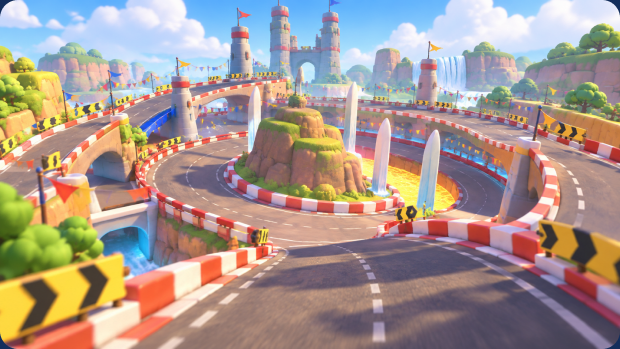
Точное сходство с иллюстрацией и окончательное визуальное согласование не заявляются. Крупные исходные формы и рельеф сохранились; игровой свет в симуляторе проще референса.
Игровые кадры
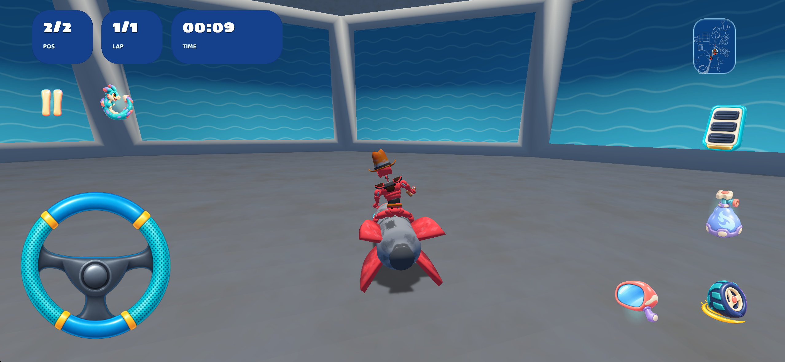
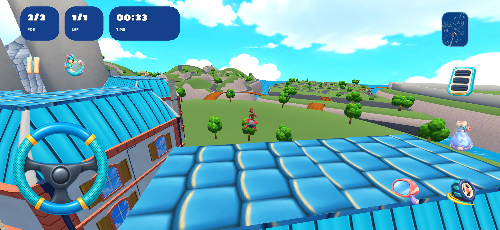
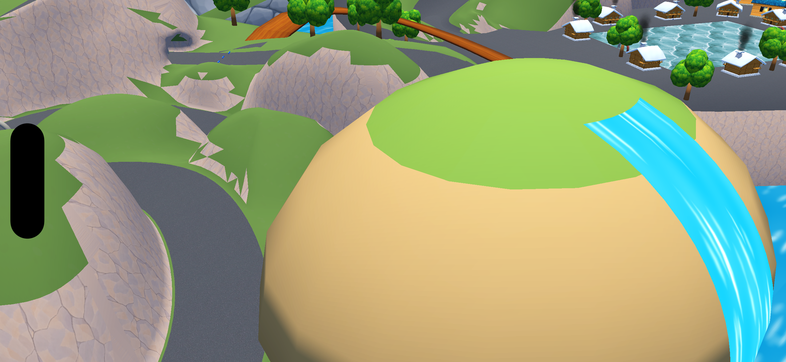
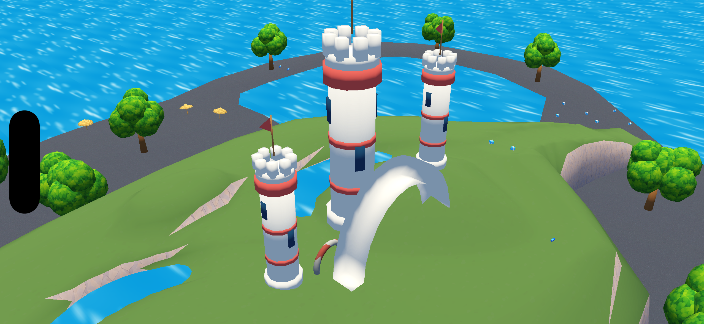
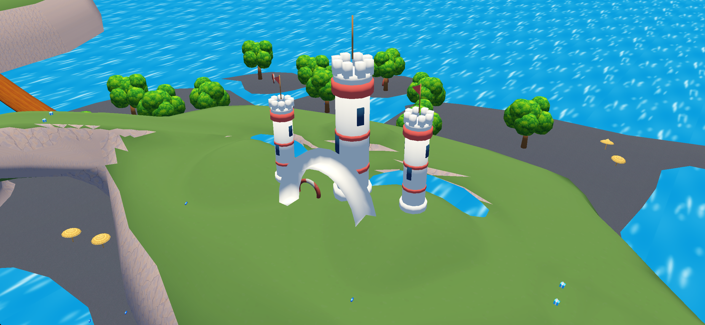
Вес и переиспользование
| Измерение | Результат |
|---|---|
| Исходная папка карты | 14,53 МБ |
| Текущая папка карты | 12,14 МБ |
| Все новые общие ресурсы этой карты | 85,577 байт |
| Карта вместе с новыми общими ресурсами | 12,23 МБ |
| Треугольники с каждым экземпляром | 378,069 → 384,576; в пределах ±20% |
| Распакованное приложение | 294,53 МБ, Debug iOS Simulator. Это не размер IPA или скачивания из App Store. |
Окружение добавлено ссылками на реальные общие модели и координатами. Новые башни, арки и каскады экспортированы в игровые библиотеки. Округлые деревья, кусты, холмы, цветы и флажки переиспользованы из общего пула. Оригинальная музыка сохранена. Исходные изображения, рецепты, реальные материалы и меши сохранены в физическом пакете; каталог не подменяет сами файлы.
Проверки и ограничения
Сверены исходные вершины, нормали и все треугольники. Разбиение на буферы изменено только для материалов; полотно не заменено, поверх него новый дорожный меш не наложен. graph.xml, quads.xml, track.xml, физические модели препятствий, игровые точки, линии, предметы и первоначальные преобразования размещений сохранены. Физические свойства исходных материалов перенесены на новые имена.
Проекция вершин всех новых размещений проверена по исходным 1499 дорожным четырёхугольникам. Отсутствующих текстур в повторно открытом Blender-файле нет; координаты связанных экземпляров совпадают с экспортом. Файлы проекта, сборки и установленного приложения сверены по SHA-256.
Проверочный заезд с одним кругом завершился естественно. Полный заезд на 11 кругов автопилот не завершил за 400 секунд. Исходный вариант тоже не завершал полный прогон, но места остановки отличаются; отсутствие игровой регрессии по этому тесту не доказано. Полное завершение кампании остаётся непроверенным, карту нельзя считать полностью принятой. Осмотр камерой проверяет отображение участков, а не их прохождение игроком. Производительность не измерялась.
Осмотр остальных участков игровым движком
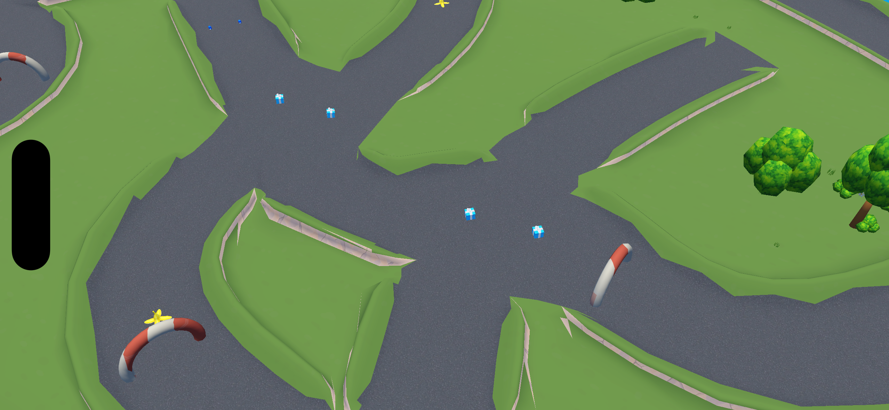
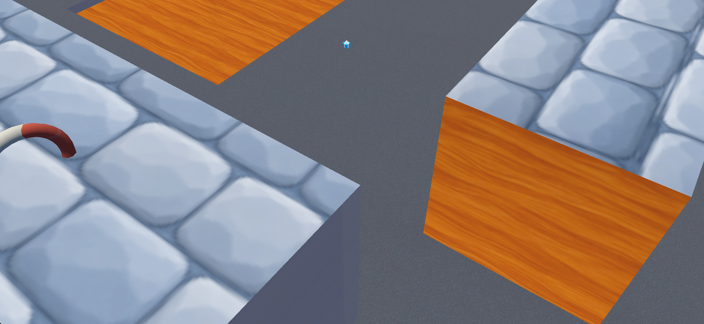
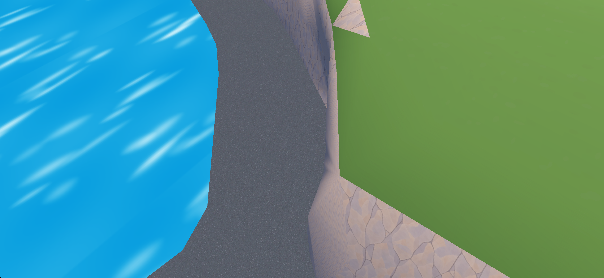
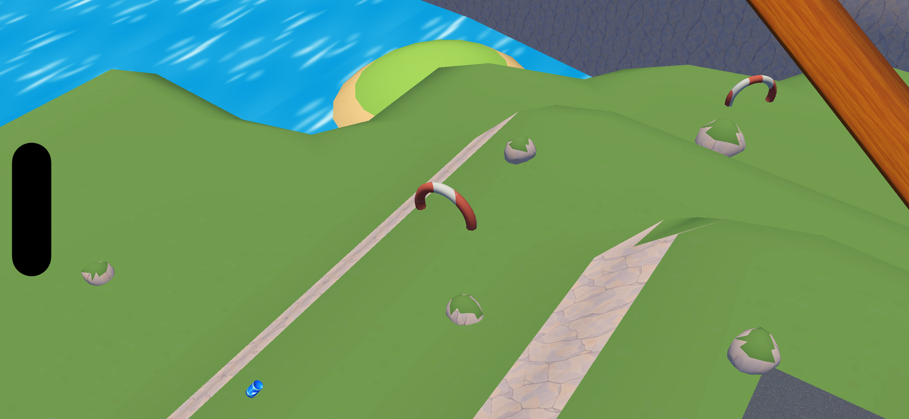
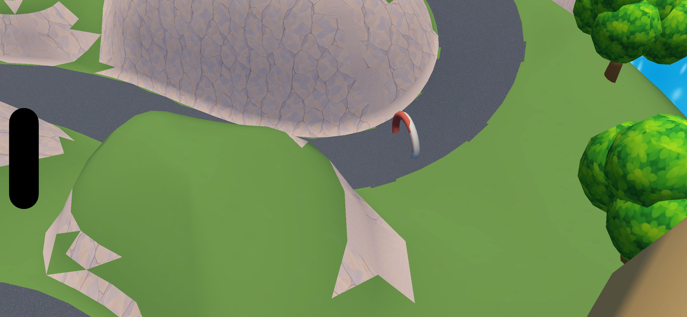
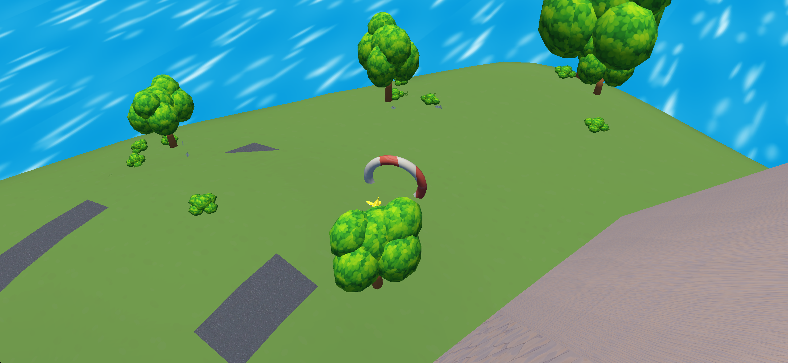
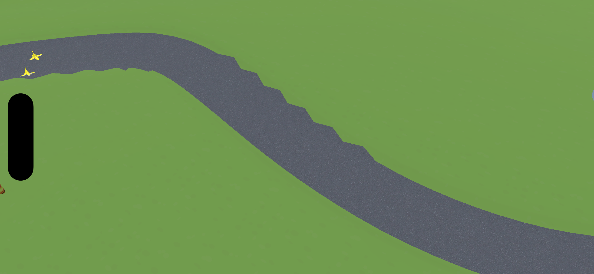
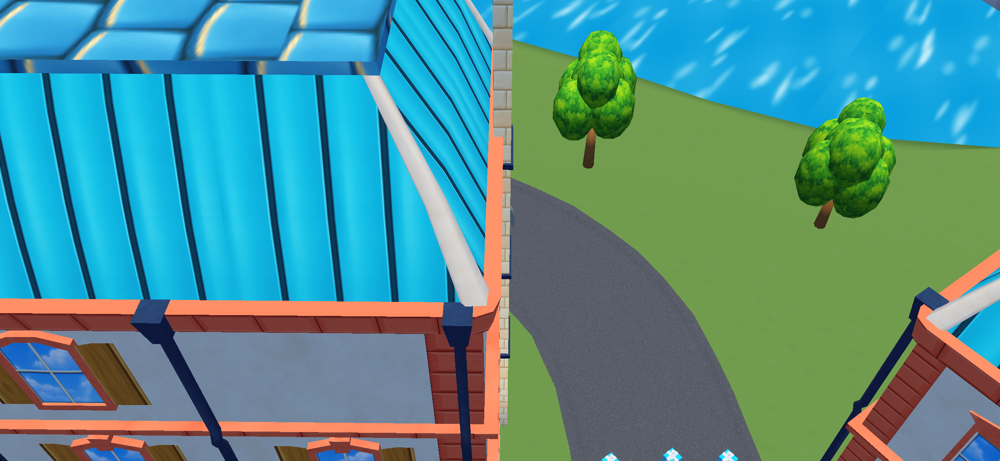
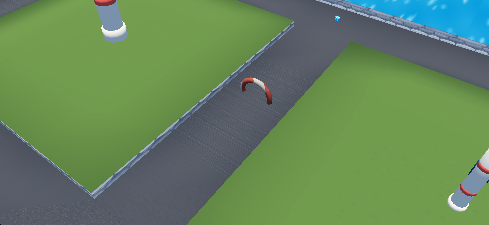
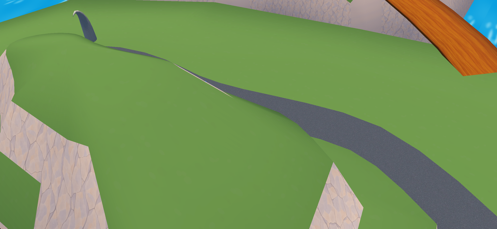